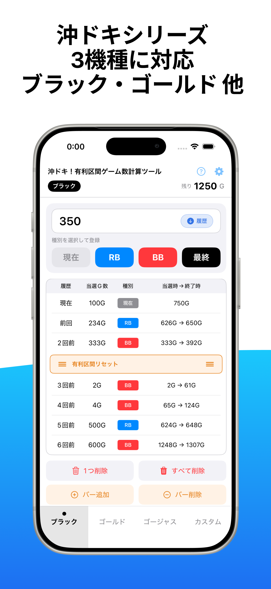
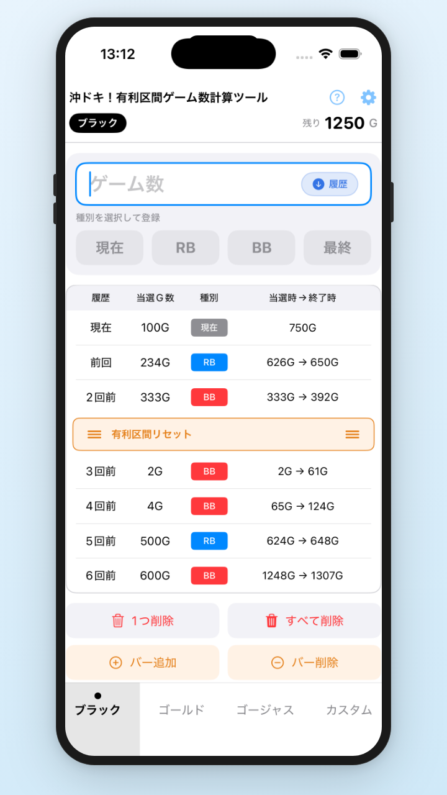

基本の流れ
1
機種を選ぶ
下部のタブから機種を選択します。

2
G数を入力してボタンをタップ
G数を入力して RB / BB / 最終 をタップ。

3
残りG数を確認
残りG数が自動で計算・表示されます。

2つの入力モード
カプセル型の切替ボタンをタップして、モードを切り替えます。
履歴入力モード
台の途中から打ち始めるとき
- ・ データサイトの履歴を入力
- ・ 過去の当選を下に追加していく
- ・ すべて入力後に「現在G数」を記録して実戦開始
実戦入力モード
リアルタイムで記録するとき
- ・ ボーナスを引いたら即入力
- ・ 新しい当選が上に追加される
- ・ 朝一からの実戦に最適
おすすめの使い方
パターンA: 台の途中から打つ場合
- 履歴入力モードでデータサイトの当選履歴を古い順に入力
- すべて入力したら、実戦入力モードに切り替え
- 「現在G数」を入力してスタート
- 以降はボーナスを引くたびにそのまま記録
パターンB: 朝一から打つ場合
- 実戦入力モードのまま使用
- ボーナスを引いたら当選G数を入力して記録
- 残りゲーム数を随時確認しながら実戦
画面の見方や計算の仕組みなど、より詳しい解説はこちらをご覧ください。
さらに詳しい使い方はこちら →